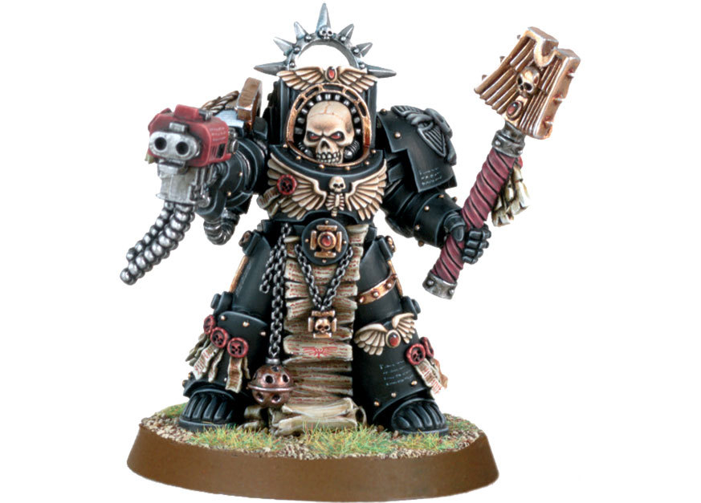

Trasfondo del Universo de Warhammer
El universo de Warhammer es un lugar oscuro y tumultuoso, lleno de conflictos entre razas, imperios y dioses.
Ejércitos
Descubre las diversas facciones y ejércitos que luchan por el dominio en el mundo de Warhammer.

Tutoriales de Pintura
Aprende técnicas de pintura para dar vida a tus miniaturas y crear ejércitos impresionantes.
